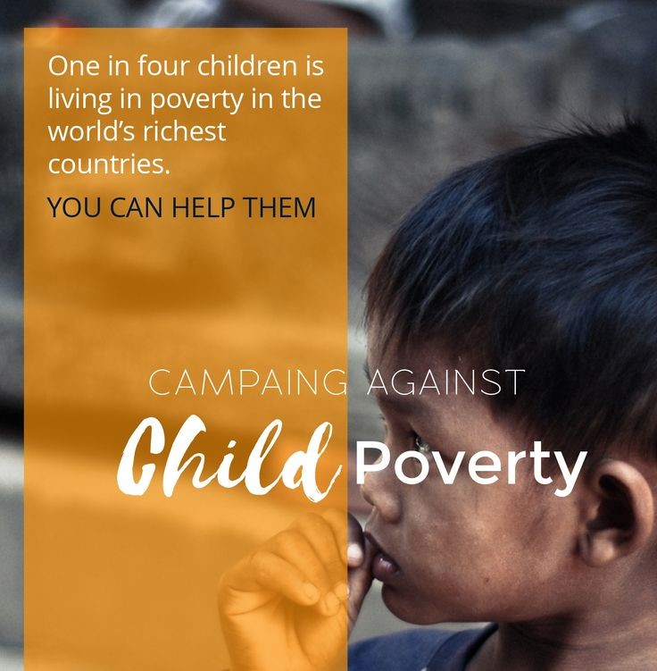
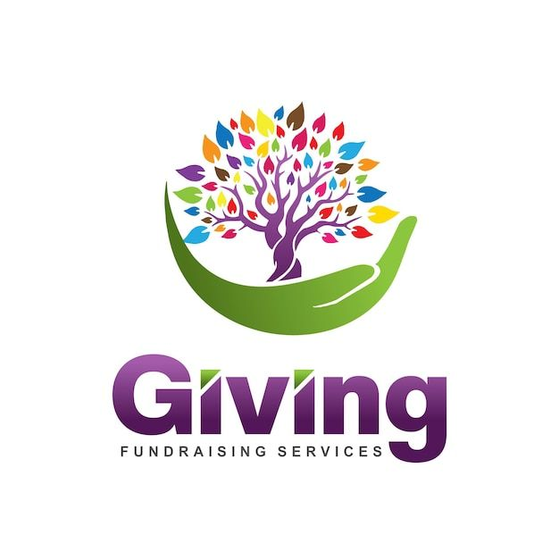

We committed to supporting children's education, providing food donations, and fundraising must adopt a multi-faceted approach. Firstly, establishing educational programs and partnerships with local schools ensures access to quality education. Simultaneously,we organize awareness campaigns within communities that can promote the importance of education for children.
For food donation initiatives, forming collaborations with local businesses, farms, and government agencies can help secure a stable supply. Implementing nutrition education programs alongside food distribution ensures holistic support for children's well-being.
Fundraising efforts should involve diversified strategies such as events, online campaigns, and engaging with corporate sponsors. Establishing transparency in financial matters builds trust with donors, encouraging sustained support.